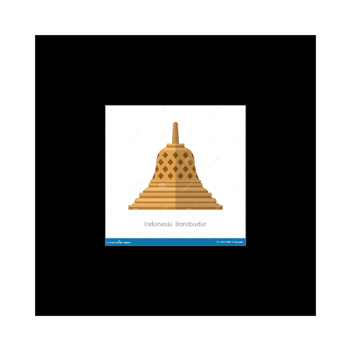
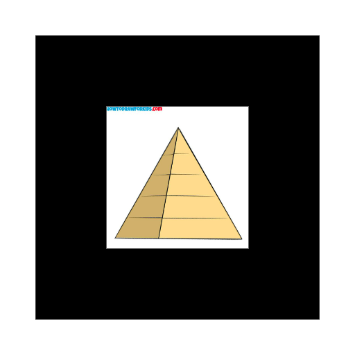
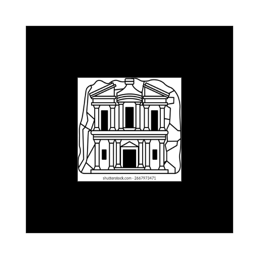
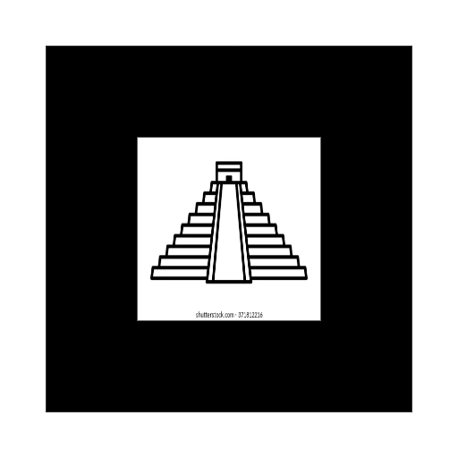

🏛️ Candi Borobudur

Candi Buddha terbesar di dunia
📍 Magelang, Jawa Tengah, Indonesia
🔺 Piramida Giza

Piramida tertua dan terbesar
📍 Giza, Mesir
🕌 Taj Mahal
Mausoleum marmer putih
📍 Agra, India
🏛️ Ad Deir (Petra)

The Monastery - Kota Kuno Petra
📍 Petra, Yordania
🏯 Angkor Wat
Kompleks candi terbesar di dunia
📍 Siem Reap, Kamboja
🔺 Chichen Itza

Piramida El Castillo
📍 Yucatan, Meksiko
🏰 Benteng Khertvisi
Benteng tertua di Georgia
📍 Meskheti, Georgia
🗼 Menara Pisa
Menara Miring yang Terkenal
📍 Pisa, Italia